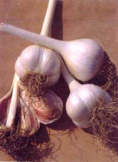
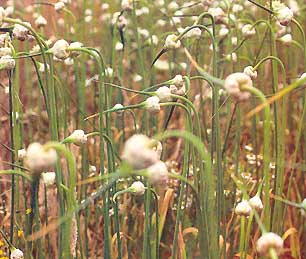
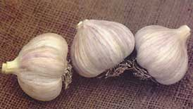
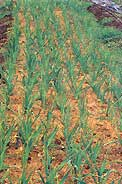

Planting Garlic
Use our step-by-step instructions to cultivate your own patch of savory, easy-to-grow, fall-planted garlic.
By Lynn Keiley
October/November 2001
Before you put your garden to bed for the winter, remember to plant some garlic. Tuck a handful of cloves into the soil this fall, cover them with a blanket of shredded leaves and forget about them. Early next spring, lively green tufts will emerge through the mulch, bearing the promise of warm, sunny days and rich flavors soon to come. By midsummer, your savory garlic bulbs will be ready to harvest.
When to Plant Garlic
Columbus Day, Oct. 12, is the optimum time to plant garlic in most regions of the country. In hotter zones, November and December are the best times for planting. Garlic prefers loose, fertile soils with good drainage. Work in a one-half-inch layer of compost or fresh grass clippings to provide a wellbalanced diet for the cloves, since you want them to root well before the really cold weather sets in. Cloves should be planted 1.5 to two inches deep. Space cloves five to six inches apart in rows spaced nine to 10 inches apart.
Once the cloves are planted, cover with a blanket of mulch (unless you have reliable snow cover) to protect them during freeze-and-thaw cycles. Grass clippings make excellent mulch, releasing nitrogen and other nutrients while they insulate and deter weeds. Shredded leaves and straw are both good second choices. Early in spring, when you notice little tufts of green trying to make their way through the mulch, Huff it lightly with a fork or your hands to help the shoots break through. Unless your spring is very wet, leave the mulch in place to help maintain soil moisture. If you didn't use a nitrogen-rich grass mulch in the fall, apply a light dressing of organic fertilizer, such as alfalfa or soybean meal, in early spring to help increase bulb size.
Hardneck varieties will send up a flower scape, or stalk, in late May or in June (see photo in the image gallery). The stalks add a touch of whimsy to the garden, hut if you leave them on, the plants will use up energy that could be spent to grow larger bulbs. So, if you're after big bulbs, cut off the scapes shortly after they appear and use them to garnish your stir-fry dishes.
When to Harvest Garlic
Pull your garlic too early and you'll harvest small bulbs that don't store well; wait too long and the cloves will begin to pull away from the stalk and dry out. The trick is to begin watching for clues in midsummer. When the leaves start to turn brown. Stop watering (and hope for dry weather) to help the skins dry out. When slightly more than half the leaves have turned color, pull a sample bulb every few days. When the cloves fill out the skins evenly, your crop is ready for harvest.
Pull bulbs gently from the soil with your hands or lift them with a garden fork. Brush off as much dirt as you can with your hands. Bulbs harvested from dark soils with high levels of organic matter may be harder to clean. You can wash them with water, but before you do, you should know that this is a controversial practice - some people feel washing the bulbs makes them vulnerable to storage diseases. Extension researchers at the University of Minnesota did not find this to be true. To play it safe, allow the bulbs to dry, then rub off any re maining soil along with the dirty outer layers of skin.
The bulbs should be cured in a well-ventilated storage area out of direct sunlight for three to four weeks. Hang in bundles of 10 to 15, or braid softneck varieties if you prefer. After curing, trim the roots so they don't continue to draw moisture from the bulb. You can also cut back the stalks at this point, unless you're planning to braid them.
Before you move your harvest to the kitchen, set aside the biggest bulbs for next season's planting stock. Garlic adapts to the conditions it's grown in, improving in size and quality when you save the best bulbs for replanting each year. Store the rest of your bounty in an airy spot at room temperature, not in the refrigerator.
Garlic Types: Hardnecks, Softnecks, but no Rednecks
Garlic is divided into two basic types: those that send up a flower stalk (the hardnecks) and those that don't (the softnecks). There are many different subgroups and varieties within these two basic types. If you want to get really serious about growing great garlic, check out the Filaree Farm's catalog (see sources on the right) - it offers more than 100 varieties. The Filaree folks offer special packages that include several kinds of garlic, chosen to suit your region.
SOFTNECK GARLIC VARIETIES contain a cluster of small cloves in the center surrounded by larger cloves on the outside, just like the petals of a rose (hence garlic's alternate nom de plume, "the stinking rose"). The most frequently grown type of garlic, softnecks store well and adapt to a variety of growing conditions.
HARDNECK GARLIC VARIETIES contain fewer cloves in each bulb than softnecks, but the large cloves break apart readily and are easier to peel. Their easy preparation and pungent flavor make them a favorite of cooks, but they don't keep as long as the softneck types. In late spring, hardneck bulbs send up tall flower stalks, or scapes, with curlicues on the end. Young scapes are considered a delicacy in many East Asian cuisines. Most hardneck varieties do best in northern climates where springs are wet and summers dry.
ELEPHANT GARLIC, shown in the image gallery, looks like an oversized garlic bulb, but it actually is more closely related to leeks. Milder flavored than its hot and spicy true garlic cousins, elephant garlic adapts well to most areas of the country but should be protected with a blanket of mulch where winters are extreme.
Garlic Seed Sources
Garlic for Good Health
Garlic is hardy and not often bothered by pests. Nematodes can be a problem, especially in the West, and they sometimes persist in the soil for several years. Plants infested with nematodes will be stunted, with pale, twisted leaves. Eventually the stem will begin to rot. Prevention is the best defense: Start with clean seed stock and don't plant garlic near nematode hosts, such as onions, peas, parsley, celery or salsify.
Onion thrips are small, sucking insects that attack garlic, especially during dry, warm weather. Spray stems with water or insecticidal soap and remove crop residue after harvest. Soilborne diseases like white rot and penicillium molds can sometimes be a problem in garlic crops, usually causing stunted plants to turn yellow and die. You can avoid these problems by starting with disease-free planting stock (see "Garlic Seed Sources," above), adding compost to your planting bed and cleaning up crop debris after harvest.
See also:
- Great-tasting Garlic is Good for Your Heart
- It's Garlic Scapes Season: Try ThisMake Your Own Garlic Powder
|
 COURTESY JOHNNY'S SELECTED SEEDS This hale and hardy, fall-planted crop will be the first to greet you next spring. Vigorous 'German Extra-Hardy' garlic stores well. |
 RICK WETHERBEE Hardneck garlics produce curly flower scapes which make a tasty addition to stir-fry dishes. |
 COURTESY JOHNNY'S SELECTED SEEDS 'Russian Red' garlic is strong flavored. |
|
 RICK WETHERBEE Garlic is great for your health. |
 RICK WETHERBEE Easy-to-peel elephant garlic is bigger but milder than true garlic. |
|